添付モデルの車体幅36 mmを維持した1/80用の車体です。全体の拡大・縮小は行っていません。 理想形状70部品から、切断・曲げ・積層・接着を使う114部品の近似モデルへ整理しました。 台車・走行装置・屋上機器は今回の車体キットに含みません。
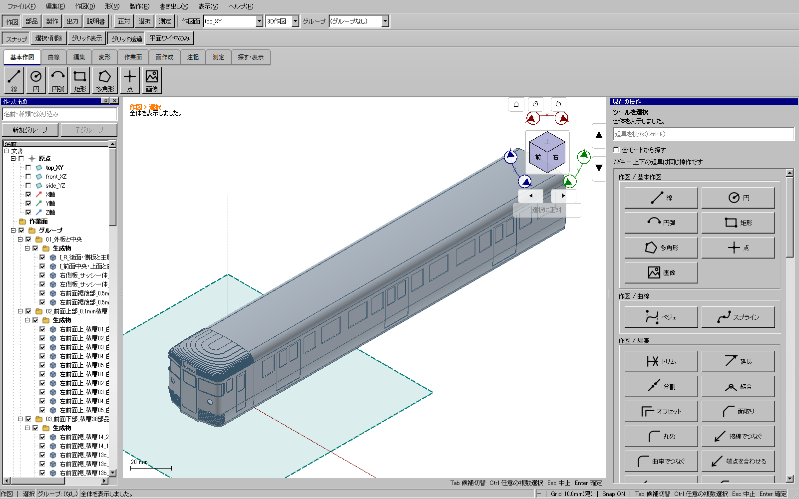
リリースの series115-plaboard-36mm-20261109.zip を展開します。
CAD用ZIPは別に展開し、kachakacha_cad_next.exeを起動して「ファイル → 開く」からモデルを開きます。開いたらFキーで全体を表示します。
| ファイル | 用途 |
|---|---|
| body-ideal.kcd2 / .step | 元の外形に沿う理想モデル。70部品。 |
| body-approximation.kcd2 / .step | 組立状態の近似モデル。114個の独立部品、9フォルダー。部品を一つずつ選べます。 |
| body-flat-stock-layout.kcd2 / .step | 切り出す前の平板114個。白0.1/0.3/0.5/1.0 mmと透明0.2 mmの5フォルダーへ分け、B4相当の範囲に配置しています。 |
| flat-stock/P001.kcd2〜P114.kcd2 | 一つずつ開ける独立した平板部品。厚みと開口を持つソリッドです。 |
| cutting-patterns-A4-1to1.pdf | A4・10ページの原寸型紙。用紙に合わせて縮小しないでください。 |
| cuts/svg、cuts/dxf、cuts/pdf | P001〜P114の個別型紙。番号と部品名はcomponents.csvで対応します。 |
| cuts/P076-center-back | 中央部品P076の裏側の切断ガイド。同じ1部品の表裏であり、追加部品ではありません。 |
| components.csv / components.json | 部品番号・材質・板厚・加工上の注意。JSONには原寸出力の照合記録もあります。 |
外板の幅は36 mm、車体部分の長さは243.75 mmです。窓枠は外板から約0.05 mm出るため、突起を含む最大幅は約36.10 mmになります。 外板を36.10 mmへ広げたものではありません。
body-flat-stock-layout.kcd2を開き、Fキーで全体を表示します。横方向に5つの材料区画があります。flat-stock/P番号.kcd2を直接開きます。印刷・切断には対応するcutsの2D型紙を使います。材料区画は364×257 mm、外周の余白5 mm、部品間の余白2 mmを基準にしています。配置CADは剛体回転・移動だけで作り、拡大縮小していません。表裏と左右の判断はP番号の型紙・部品名を基準にしてください。配置図の向きだけで裏表を決めません。
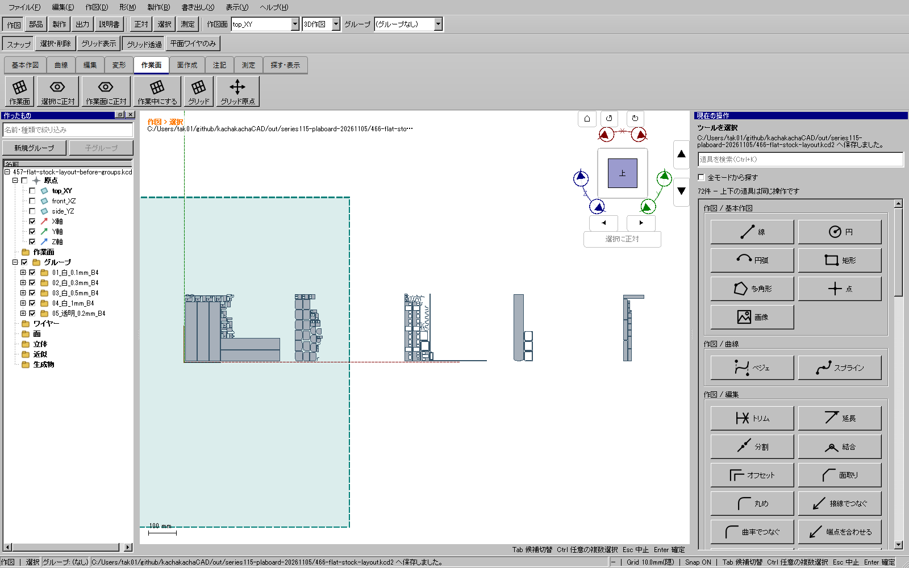
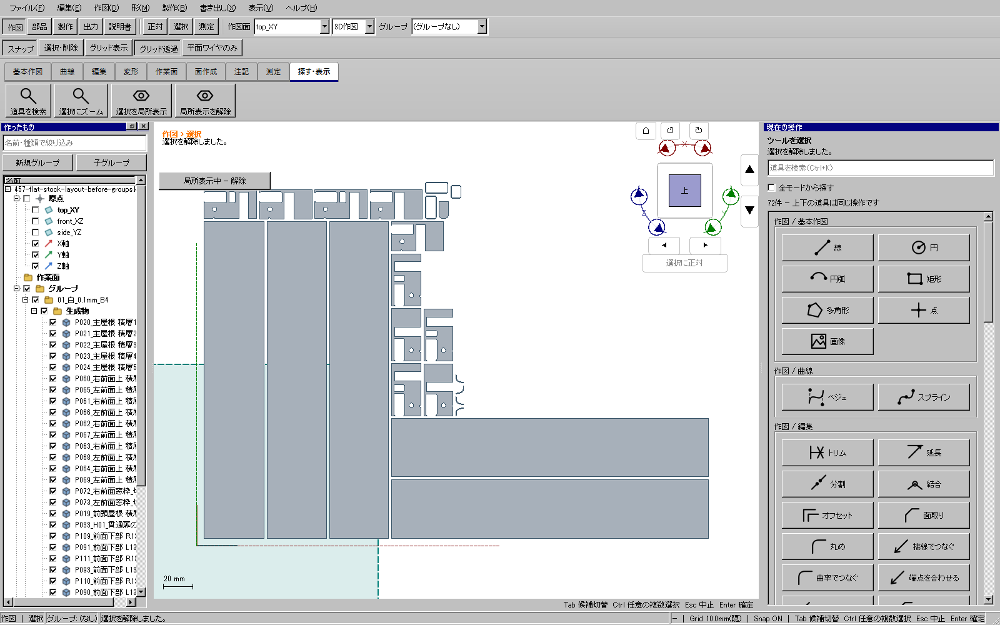
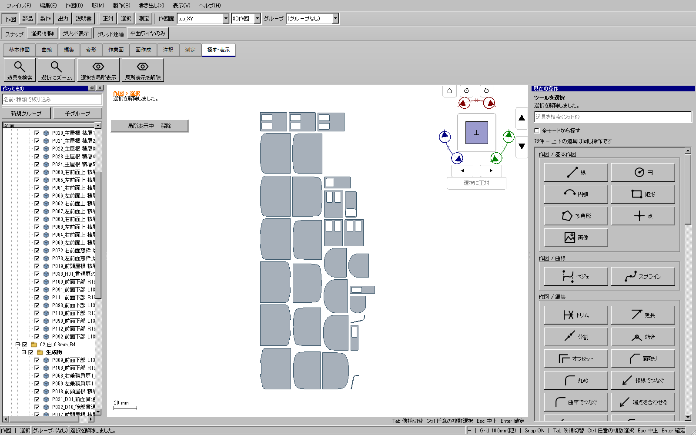
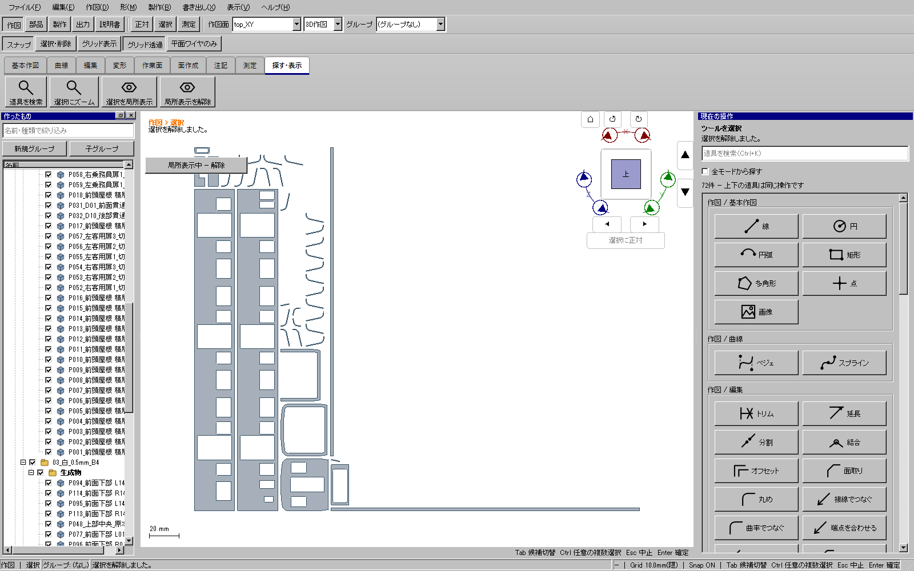
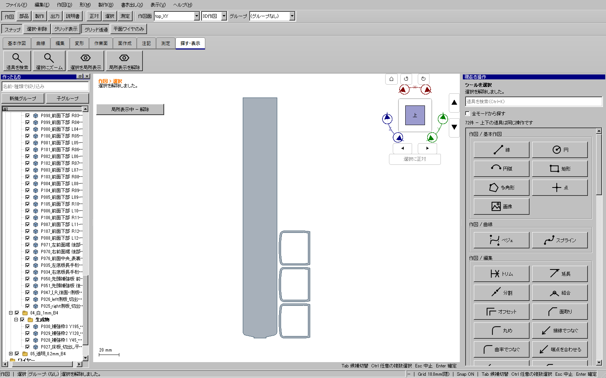
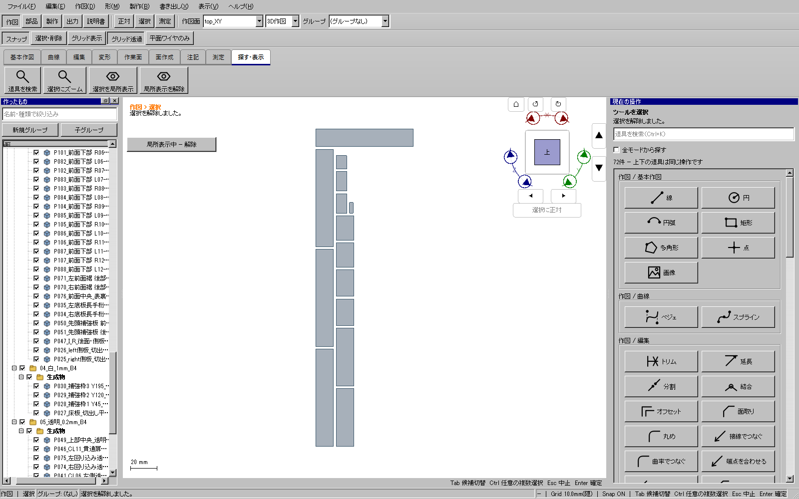
| 材料 | 板厚 | 部品数 | 主な用途 |
|---|---|---|---|
| 白プラ板 | 0.1 mm | 27 | 主屋根、前面上部、窓枠、下部の細かな積層 |
| 白プラ板 | 0.3 mm | 30 | 前頭屋根の積層、扉、下部の一部 |
| 白プラ板 | 0.5 mm | 39 | 側板、前面下部、中央、補強など |
| 白プラ板 | 1.0 mm | 4 | 底板と補強枠3個 |
| 透明プラ板 | 0.2 mm | 14 | 側窓など12個、回り込み窓2個 |
材料寸法・用途はタミヤの製品情報を参照しました。 0.1 mmプラペーパー、 0.3 mmプラバン、 0.5 mmプラバン、 1.0 mmプラバン、 0.2 mm透明プラバン。 透明板もスチロール樹脂です。材料資料には今回の小半径での冷間曲げ限界は示されていません。
「08_床板と補強」で、底板1 mm、長手桁0.5 mm、Y45・120・195の補強枠1 mmを確認します。 先頭の補強枠は、前側Aと後側Bの0.5 mm板2枚です。前側Aの上部は前頭屋根に当たらない形です。
側板は左右各1枚。サッシ24個は側板の開口周囲へ組み込んであり、別の24部品を重ねる工程はありません。 上側20 mmを直線のまま残し、下側約7.00625 mmを中立半径29.75 mmの裾曲線へゆっくり合わせます。 これは折り線で急に折る工程ではありません。左右・窓・扉の開口をCADと照合してから接着します。
客用扉は右3枚、左3枚。乗務員扉は左右各1枚です。0.3 mmの扉も裾に沿って曲げます。 客用扉は上側18 mmが直線、下側約5.266 mmが曲線。乗務員扉の曲線部分は約3.992 mmです。 扉の向きと位置は「06_扉」で確認し、窓を塞がないようにします。
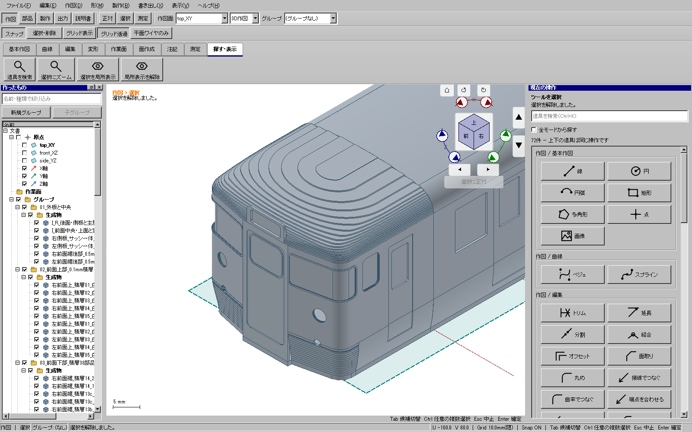
前面上部は左右それぞれ0.1 mm板5枚です。「02_前面上部」の1が外側、5が内側です。 平らな部分を平らに保ち、角の回り込み部分だけ曲げて5枚を重ねます。 上下や左右を反転して窓・ライトの穴を塞がないよう、毎層をCADへ照合します。
中央部品P076は0.5 mm板1個です。表と裏の輪郭が異なるため、単純な垂直切断の平板に置き換えません。 表の輪郭を残し、裏の輪郭へ向けて端面を斜めに切ります。扉の開口は切り抜いたまま残します。
左右の前面裾後部P070・P071は、型紙から粗切りした0.5 mm板を曲げた後、乗務員扉に接する端面だけ斜めに切ります。 扉そのものを削ったり、車体幅を変えたりしません。最終CADではその端面だけを隣の扉の形で差し引き、重なりを解消しています。
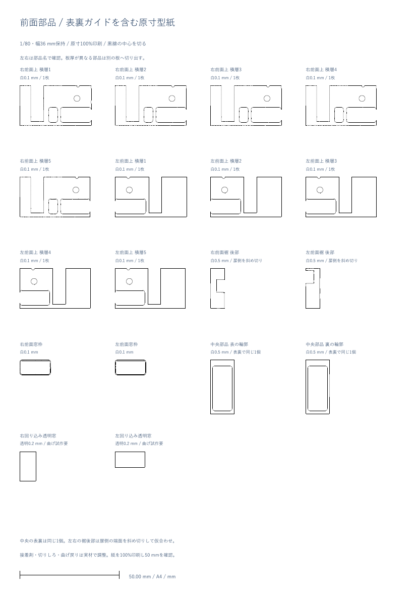
前面下部は左右19個ずつ、合計38個です。Lが左、Rが右です。 01〜12は0.5 mm、13aは0.3 mm、13b・13cは0.1 mm、14は0.5 mmです。 同じ段に「-1」「-2」がある場合は、穴の切り欠きで離れた別々の小片です。つなぐ帯を勝手に追加しません。 CADの「03_前面下部」で高さを確認し、低い段から積みます。輪郭が用紙上で回転している部品は、CADの向きに戻して合わせます。
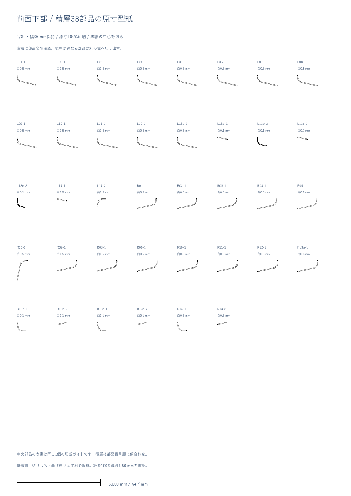
前頭屋根は0.3 mm板18枚と0.1 mm板1枚をZ27〜32.5 mmへ積層します。 主屋根は0.1 mm板5枚を曲げて重ねます。幅は外側から約41.07853、40.76437、40.45021、40.13605、39.82190 mm、長さは216.75 mmです。 主屋根を先に補強枠へ仮合わせして、前頭屋根との境目が開かないことを確認します。接着剤の厚さをCAD寸法へ自動加算してはいません。
前面窓枠は0.1 mm板です。中央と前面上部を先に仮組みし、窓枠が開口へ沿うことを確認してから接着します。 「09_透明板」のチェックを外すと、CADでも実際に穴が開いている状態を確認できます。
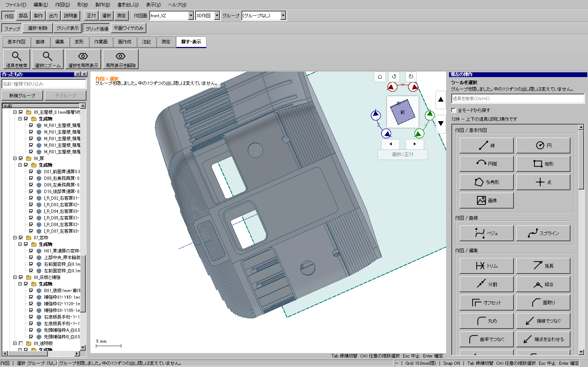
回り込み透明窓の切り出し寸法は、右約14.8976×8 mm、左約14.8874×8 mmです。 0.2 mm板の中立半径は右約2.3489 mm、左約2.3502 mm。 この曲げが冷間で可能かは未確認なので、透明板の端材で先に試します。割れ・白化・大きな戻りが出る場合は、無理に接着で固定せず、透明部分の製法を決め直してください。
幾何診断で作った形状をCADへ注入せず、モデルの作成・加工・統合・整理・出力は実際のGUI経由で行いました。 114部品はそれぞれ1つの有効な閉ソリッドです。最終修正では112部品の保存形状をそのまま保持し、2部品の端面だけを差し引きました。
| 照合対象 | 結果 |
|---|---|
| 前面下部の38枚積層と理想形状 | 双方向の有限標本差は最大約0.12001 mm。全域の解析的な上界ではありません。 |
| 前頭屋根の19枚積層 | 有限標本差は最大約0.14961 mm。段差を消す熱加工や研磨は工程へ仮定していません。 |
| 前面上部の5枚積層 | 有限標本差は右最大約0.000054 mm、左約0.000013 mm。 |
| 側板に統合したサッシ24個 | 0.5 mmの一様板厚で、厚み方向の形も照合しました。 |
| 部品同士 | 6,441組の外接箱を照合し、455候補を独立に検査。検出した左右2か所の食い込みを端面の切断で解消しました。任意形状に対する万能の非干渉証明ではありません。 |
| 型紙 | 個別SVG/DXF/PDFの輪郭と原寸を照合。まとめたPDFの配置は平行移動・90度単位の回転のみで、拡大・縮小はしていません。 |
| 実物の工作 | 未実施。透明板の小半径曲げ、白板の曲げ戻り、接着剤、切りしろ、実印刷を確認する必要があります。 |
平板114部品の一括STEPは、読込・選択・再読込検査を含む実操作工程で約693秒、確定クリックから完了まで約493秒でした。個別平板を開けるようにもしていますが、この大きな一括出力の高速化は未達です。
ソフトの全体・配布版検証結果は、同じリリース記録を参照してください。 「考えられる全形状」「常時60 fps」「あらゆる処理で従来の3倍」を証明したものではありません。